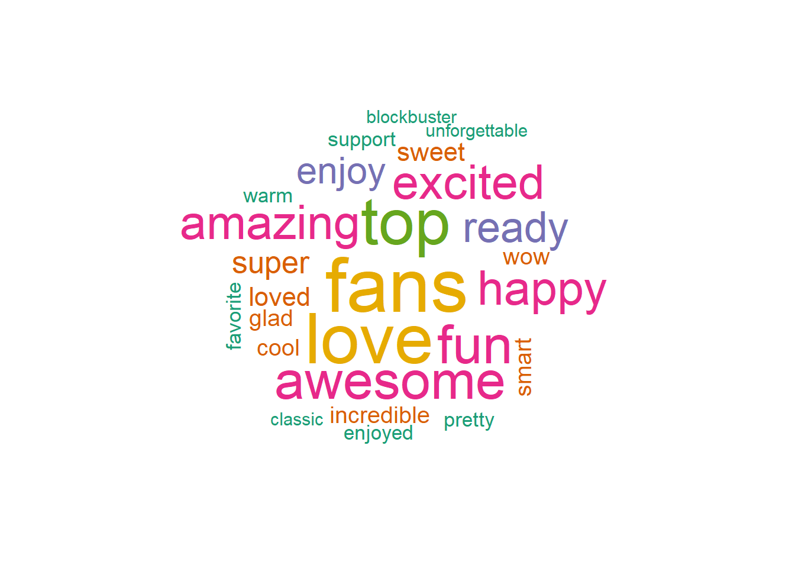
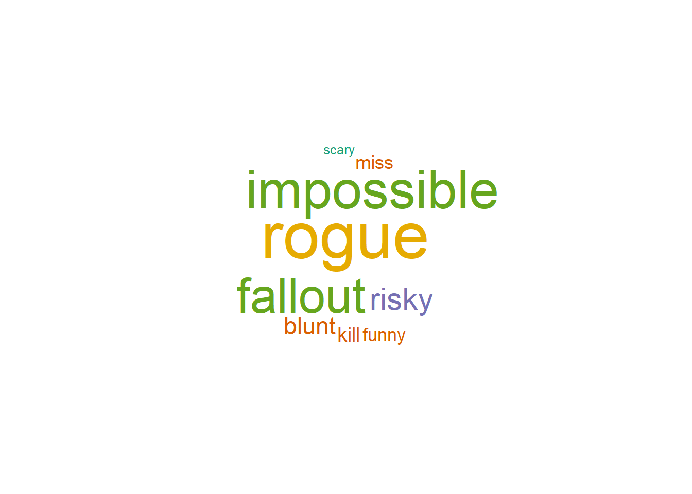
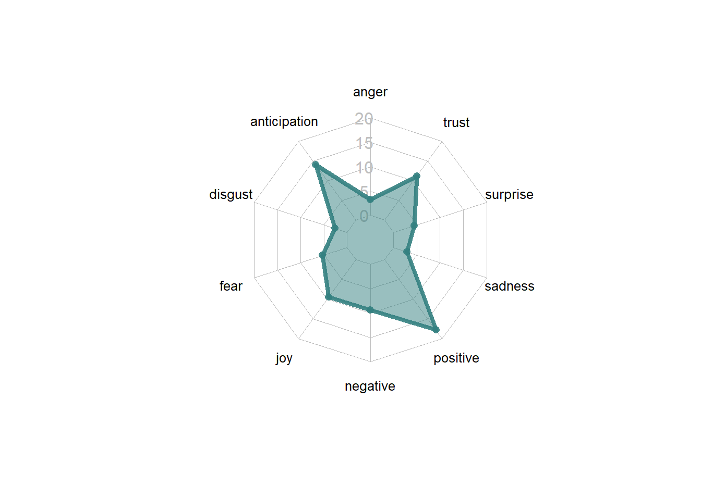
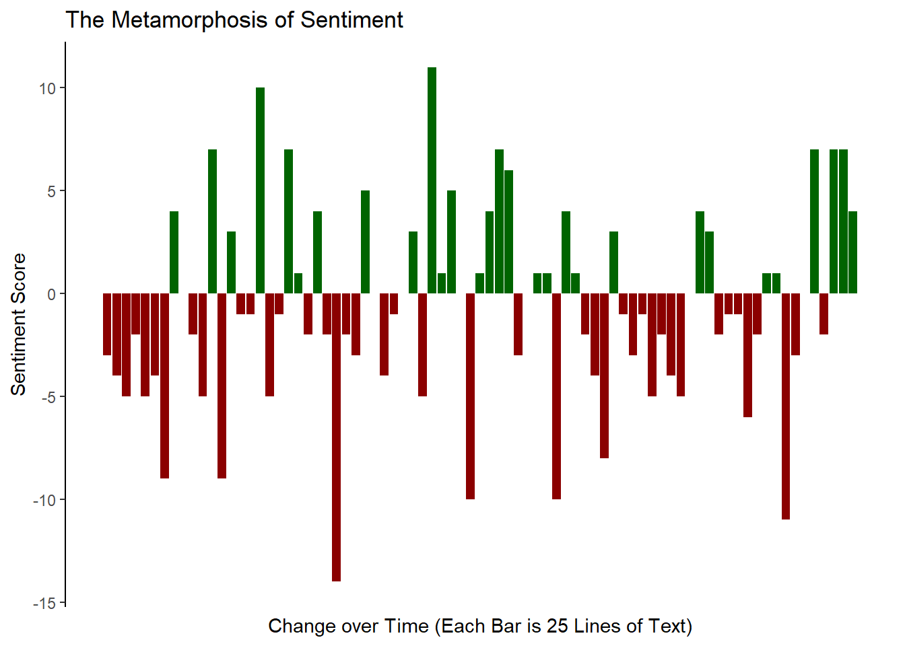
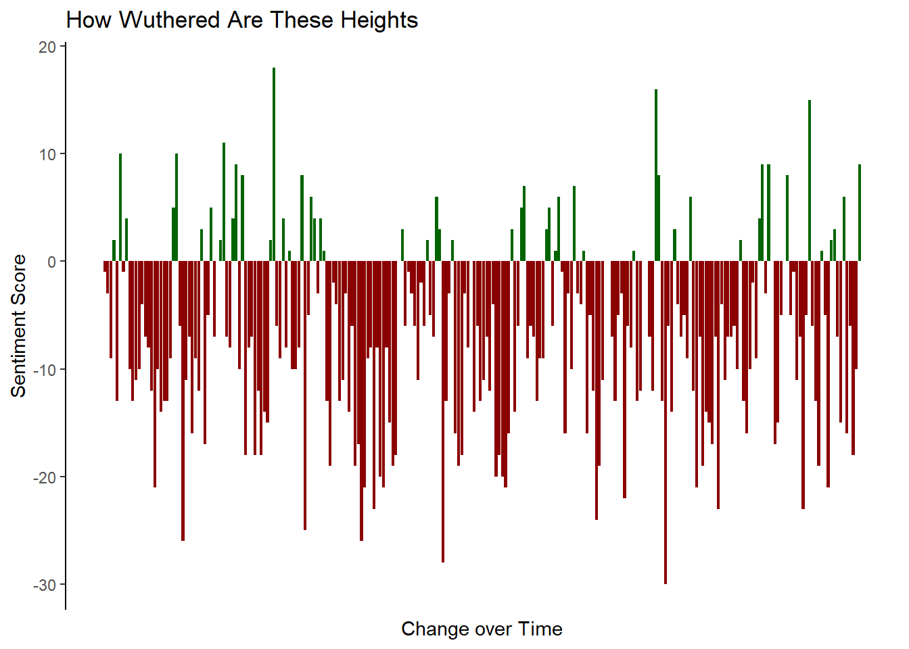

Sentiment analysis is the classification and analysis of the emotional intent in text data. Some approaches include classifying words as positive or negative, assigning words to a specific emotion (like surprise), or calculating a sentiment score in the form of a number.
This branch of NLP is often applied in consumer feedback and social media, and like all forms of data science is best used when the volume of data cannot be manually reviewed. If a company receives 50,000 pieces of user feedback, there needs to be a time efficient way of classifying them as positive or negative, and sentiment analysis is often used to fill this niche.
tidytext has several sentiment lexicons that help in such analysis. To start, we’ll take a look at “afinn”, “bing”, and “nrc”. These lexicons are typically developed over multiple years of academic research and are meant to apply an as objective as possible classification of the typical emotion of a word.
“afinn” assigns a number score, with higher numbers being more positive. You’ll notice that “afinn” doesn’t just classify something as positive or negative but also assigns a score based on how positive or negative that word is.
library(tidytext)
get_sentiments("afinn")%>%
slice(1:5)%>%
kable()%>%
kable_styling("striped")| word | value |
|---|---|
| abandon | -2 |
| abandoned | -2 |
| abandons | -2 |
| abducted | -2 |
| abduction | -2 |
“bing” classifies words as either positive or negative. It does have considerably more words classified compared to “afinn” (6,786 v 2,477).
get_sentiments("bing")%>%
slice(1:5)%>%
kable()%>%
kable_styling("striped")| word | sentiment |
|---|---|
| 2-faces | negative |
| abnormal | negative |
| abolish | negative |
| abominable | negative |
| abominably | negative |
And “nrc” assigns words as either “yes” or “no” under categories of positive, negative, anger, anticipation, disgust, fear, joy, sadness, surprise, and trust, meaning that any given word can have multiple sentiments attached to it.
get_sentiments("nrc")%>%
slice(1:5)%>%
kable()%>%
kable_styling("striped")| word | sentiment |
|---|---|
| abacus | trust |
| abandon | fear |
| abandon | negative |
| abandon | sadness |
| abandoned | anger |
In the tidytext universe of sentiment analysis, the basic workflow for sentiment analysis will be to (1) remove stop words, (2) join on sentiments, and (3) prepare for presentation. Let’s walk through a few examples of this.
Let’s look at some Tom Cruise tweets and see how we can apply sentiment analysis through wordclouds. We’ll start by pulling in our tweets and cleaning up our text. You can find a tutorial on pulling tweets here.
library(wordcloud)
library(RColorBrewer)
library(rtweet)
library(tidytext)
twitter_token <- create_token(
app = twitter_app,
consumer_key = twitter_api_key,
consumer_secret = twitter_api_secret_key,
access_token = twitter_access_token,
access_secret = twitter_access_token_secret
)
tomcruise = get_timeline("@TomCruise", n =500)
text = tomcruise %>% select(text)%>%
mutate(text = gsub(" ?(f|ht)(tp)(s?)(://)(.*)[.|/](.*)", "", tomcruise$text),
linenumber = row_number())Now we’ll make a wordcloud for positive words in these tweets, as assigned using the “bing” sentiment lexicon. First, we will use unnest_tokens() to tokenize the dataset (break each tweet into one word in each row). Then we will perform an anti_join() on the stop_words dataset provided by tidytext to remove common, mostly meaningless words.
Finally, we will perform a left_join on the “bing” dictionary to return a classification for each remaining word.
sentiment = text%>% #this allows us to retain the row number/the tweet
unnest_tokens(word, text)%>% # this unnests the tweets into words
anti_join(stop_words)%>% #removes common words (stop words)
left_join(get_sentiments("bing"))Once we have the a classified dataset, we will filter down to just the positive words and then plot them in a wordcloud.
positive_sentiment = sentiment%>% filter(!is.na(sentiment),
sentiment == 'positive') # gets sentiment score based on bing dictionary
wordcloud(positive_sentiment$word, random.order = FALSE, colors=brewer.pal(6, "Dark2"))
And the negative words…
negative_sentiment = sentiment%>% filter(!is.na(sentiment),
sentiment == 'negative') # gets sentiment score based on bing dictionary
wordcloud(negative_sentiment$word, random.order = FALSE, colors=brewer.pal(6, "Dark2"))
As you can see, Tom Cruise is a pretty positive guy. He pretty much only tweets positive words. In fact, a few of the most prominent words in his negative word cloud are from the names of his Mission Impossible movies.
Sentiment is obviously not just positive or negative. The human experience (and Tom Cruise’s tweets) are full of a myriad of experiences.
A radar chart is the perfect plot to represent the multi-polarity of the the “nrc” lexicon. The fmsb package allows us to quickly create a radar chart.
library(fmsb)
library(tidyr)
nrc_sentiment = text%>% #this allows us to retain the row number/the tweet
unnest_tokens(word, text)%>% # this unnests the tweets into words
anti_join(stop_words)%>% #removes common words (stop words)
left_join(get_sentiments("nrc"))%>%
filter(!is.na(sentiment))The radarchart() function accepts a dataframe where each column is a pole in the radar chart. Additionally, it requires a row reprsenting the minimum and a row representing the maxiumum of the chart.
# spread so that each column is a sentiment
nrc_sentiment = nrc_sentiment%>%
group_by(sentiment)%>%
summarise(count = n())%>%
spread(sentiment, count)
# create rows with the min and max to be plotted
nrc_sentiment <- rbind(rep(400,10) , rep(0,10), nrc_sentiment)
radarchart(nrc_sentiment, axistype=1 ,
pcol=rgb(0.2,0.5,0.5,0.9) , pfcol=rgb(0.2,0.5,0.5,0.5) , plwd=4 ,
cglcol="grey", cglty=1, axislabcol="grey", caxislabels=seq(0,20,5), cglwd=0.8,
vlcex=0.8 )
Let’s finish by returning to the “bing” lexicon and make a chart representing the change in sentiments throughout the course of Franz Kafka’s Metamorphosis. In our final visualization, we will create a bar chart where the x axis represents 25 line chunks of text, and the y axis represents the overall sentiment of that chunk.
Let’s start by tokenizing the text. Before tokenizing, let’s add a line number. We will use this later to “chunk” the book into sections of 25 lines of text.
library(gutenbergr)
library(tidyr)
library(ggplot2)
meta = gutenberg_download("5200")
book_words <- meta%>%
mutate(linenumber = row_number())%>%
unnest_tokens(word, text)Now that the book is tokenized, we need to first get sentiments for each word and then create an index in order to bin them into bars.
We will use the %/% operator to perform this binning. This operator performs interger division, rounding down to the nearest whole number. The first 24 lines of text will be in the 1st bin, the next 24 lines will be in the next bin and so on. Each bin will represent a single bar on our barchart.
sentbars = book_words %>%
inner_join(get_sentiments("bing"))%>%
# %/% performs integer divison, rounding down to the nearest whole number
mutate(index = linenumber %/% 25)%>%
group_by(index, sentiment)%>%
summarise(count = n())%>%
spread(sentiment, count, fill = 0) %>%
mutate(sentiment = positive - negative,
sentiment_group = ifelse(sentiment > 0, "pos", "neg"))%>%
ungroup()
sentbars%>%
slice(1:3)%>%
kable()%>%
kable_styling("striped")| index | negative | positive | sentiment | sentiment_group |
|---|---|---|---|---|
| 0 | 5 | 2 | -3 | neg |
| 1 | 10 | 6 | -4 | neg |
| 2 | 12 | 7 | -5 | neg |
Now that we have prepared our data, we need to plot it. We need a pretty good label for the x axis as this is a non-standard plot. We should also remove the x axis line, ticks, and text because what they represent will likely be confusing to the reader.
ggplot(data = sentbars) +
geom_bar(aes(x = index, y = sentiment, fill = sentiment_group), stat = "identity")+
theme_classic()+
theme(
legend.position = "none",
axis.ticks.x = element_blank(),
axis.line.x = element_blank(),
axis.text.x = element_blank()
)+
scale_fill_manual(values = c("darkred", "darkgreen"))+
labs(title = "The Metamorphosis of Sentiment",
x = "Change over Time (Each Bar is 25 Lines of Text)",
y = "Sentiment Score")
Download Emily Brontë’s Wuthering Heights and create a bar chart illustrating how sentiments shift throughout the course of the text.
Hints
library(gutenbergr)
library(tidyr)
library(ggplot2)
wuther = gutenberg_download("768")
book_words <- wuther%>%
mutate(linenumber = row_number())%>%
unnest_tokens(word, text)
sentbars = book_words %>%
inner_join(get_sentiments("bing"))%>%
# %/% performs integer divison, rounding down to the nearest whole number
mutate(index = linenumber %/% 50)%>%
group_by(index, sentiment)%>%
summarise(count = n())%>%
spread(sentiment, count, fill = 0) %>%
mutate(sentiment = positive - negative,
sentiment_group = ifelse(sentiment > 0, "pos", "neg"))%>%
ungroup()
sentbars%>%
slice(1:3)%>%
kable()%>%
kable_styling("striped")| index | negative | positive | sentiment | sentiment_group |
|---|---|---|---|---|
| 0 | 10 | 9 | -1 | neg |
| 1 | 18 | 15 | -3 | neg |
| 2 | 29 | 20 | -9 | neg |
ggplot(data = sentbars) +
geom_bar(aes(x = index, y = sentiment, fill = sentiment_group), stat = "identity")+
theme_classic()+
theme(
legend.position = "none",
axis.ticks.x = element_blank(),
axis.line.x = element_blank(),
axis.text.x = element_blank()
)+
scale_fill_manual(values = c("darkred", "darkgreen"))+
labs(title = "How Wuthered Are These Heights",
x = "Change over Time",
y = "Sentiment Score")